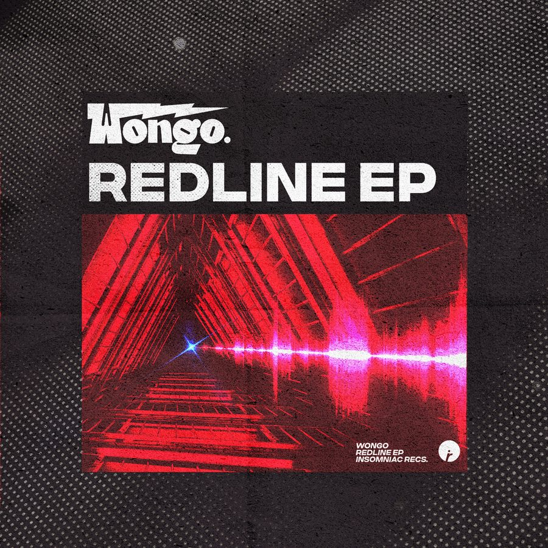

Wongo Maxes Out the Energy on ‘Redline’ EP for Insomniac Records


Earlier this month, Insomniac Records revealed an exciting teaser off an upcoming three-track EP from Wongo, in the form of “Relax!”—a hypnotic and sexy tech house number that saw him collaborating on production duties with fellow Aussie Cut Snake. Featuring a prestige deeper-than-deep bassline fit for when the club is really in that 3am groove, it was the perfect teaser for the extended Redline EP, which is available to hear in full up top.
Situated among the next generation of house producers working hard to bring you fresh bombs, Wongo has received the nod from label staples like Sweat It Out!, as well as major-label interest from Sony. Redline sees him taking things in a distinct tech house direction while drawing clear inspiration from his noisy, fidgety past.
While “Relax!” is sexy, smoldering and deep, “The Watcher” steers onto a more wonky techno path. Meanwhile, the EP wraps up with “Flying,” introducing a more jackin’ groove before ramping the energy right up during its momentous breakdown.
“This EP is another step in the direction of taking myself to my beginnings of when I first fell in love with techno and house music,” Wongo tells Insomniac. “I was really into fidget and all of that stuff, and a lot of that came through my sound in the last five years. But as I’m getting older, DJing more, and producing and writing more techno, this is a step in that direction—especially with the Cut Snake thing. It’s a mix of his housey vibe with my dark, techy vibe.”
Wongo’s Redline EP is available here.
Follow Wongo on Facebook | Twitter | SoundCloud
Follow Insomniac Records on Facebook | Twitter | SoundCloud